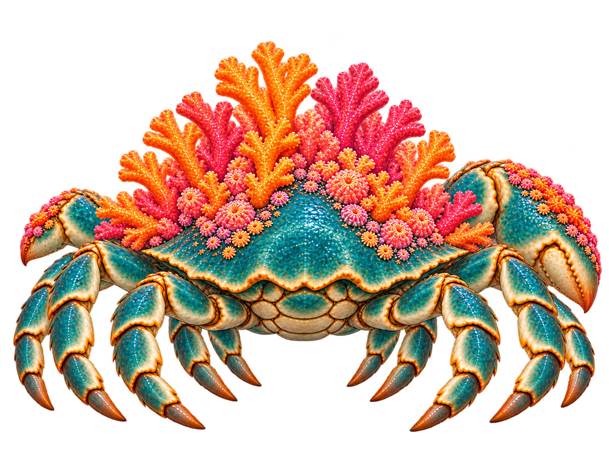
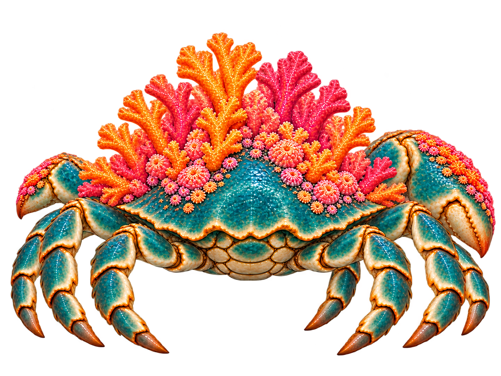
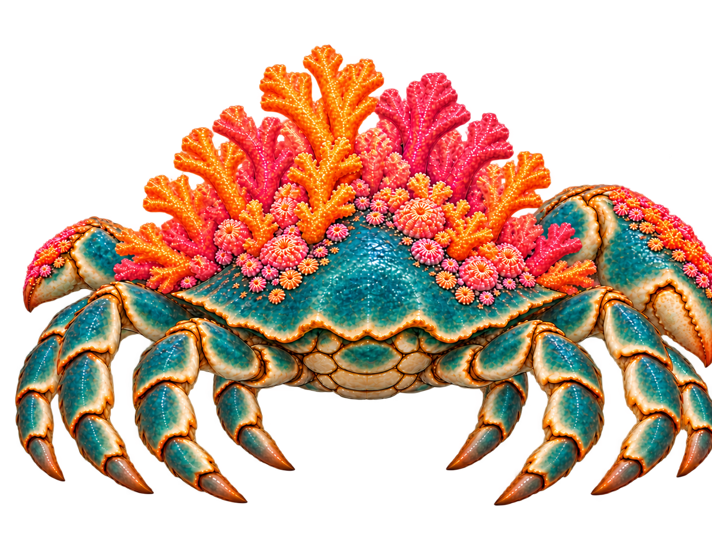
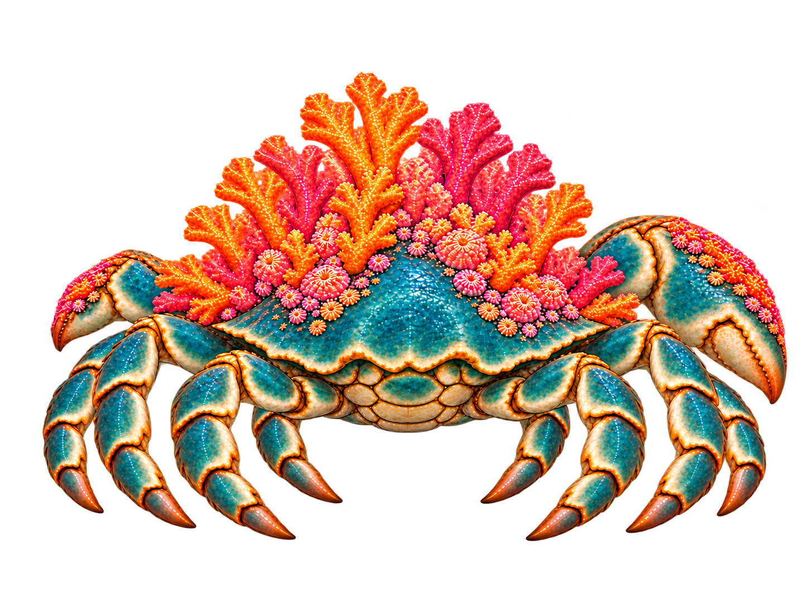

Construction drafts, not approved animation sources. Walking feet are counted separately from the two forward claw arms. Large anatomical right claw appears on image right.
Original rear: tucked feet and obscured attachments.

V1 rejected: five walking tips per side instead of four.

V2 rejected: removes too many left-side legs; three left, four right.

V3: four walking tips per side restored. Right claw and outer leg reach the image boundary; framing repair still required. Inner feet remain tucked.

V4: complete claw and outer foot, four visible walking tips each side. Inner legs remain tucked; concealed root order is not established.